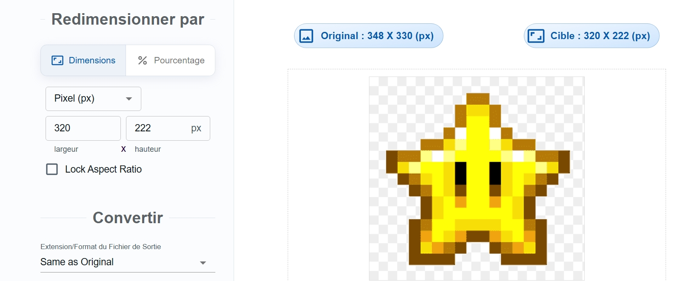
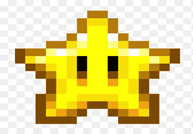
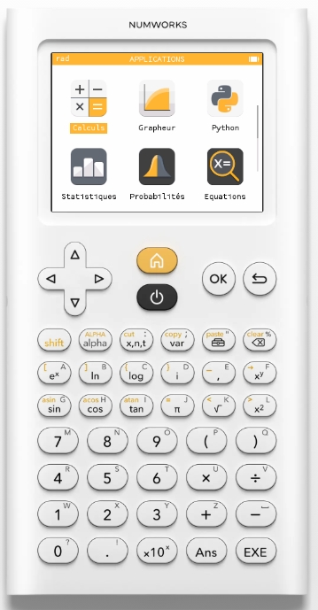
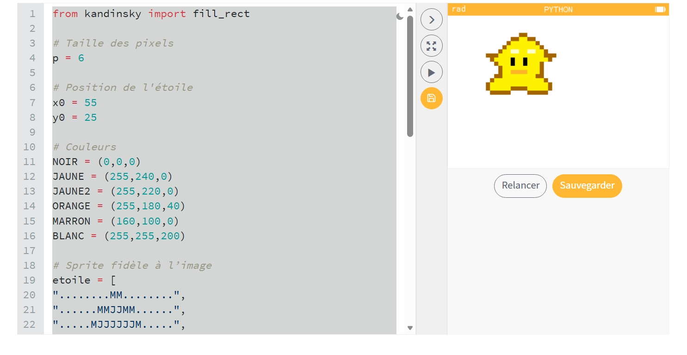
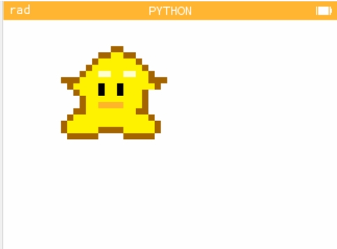

Transformer une image en code Python pour calculatrice
Mergnac Violette - 2nde4
Dans ce projet, j’ai appris à afficher une image sur une calculatrice NumWorks en utilisant du code Python.
L’objectif était de comprendre comment une image peut être reproduite à l’aide de pixels et de coordonnées. J’ai utilisé une image déjà existante et je l’ai transformée en code.
Ce travail m’a permis de découvrir les bases de la programmation graphique sur un système simple comme la NumWorks.
Voici l’image originale utilisée pour le projet :
Pour ce projet, je n’ai pas créé le pixel art moi-même. J’ai directement utilisé une image déjà faite, adaptée pour être reproduite sur la calculatrice NumWorks.
L’objectif était de comprendre comment transformer cette image en code Python sans passer par une conversion manuelle. J'ai d'abord utilisé un site pour redimensionner mon image :

Voici un aperçu de l’image réduite à 320 par 222 px :

J’ai connecté la calculatrice NumWorks à l’ordinateur pour transférer le code Python.

Le code Python a été importé dans l’application Python de la calculatrice :
from kandinsky import fill_rect
# Taille des pixels
p = 6
# Position de l'étoile
x0 = 55
y0 = 25
# Couleurs
NOIR = (0,0,0)
JAUNE = (255,240,0)
JAUNE2 = (255,220,0)
ORANGE = (255,180,40)
MARRON = (160,100,0)
BLANC = (255,255,200)
# Sprite fidèle à l’image
etoile = [
"........MM........",
"......MMJJMM......",
".....MJJJJJJM.....",
"....MJJJJJJJJM....",
"...MJJBBJJBBJJM...",
"MMMJJJJJJJJJJJMMM",
".MJJJJNJJNJJJJJM.",
"..MJJJNJJNJJJM..",
"...MJJJJJJJJJM...",
"...MJJOOOOJJJM...",
"..MMJJJJJJJJMM..",
".MJJJJJJJJJJJJM.",
"MJJJJJJJJJJJJJJM",
"MJJJJJMMMMJJJJJM",
".MMMMM....MMMMM."
]
# Dessin principal
for y in range(len(etoile)):
for x in range(len(etoile[y])):
c = etoile[y][x]
if c == "M":
couleur = MARRON
if c == "J":
couleur = JAUNE
if c == "O":
couleur = ORANGE
if c == "B":
couleur = BLANC
if c == "N":
couleur = NOIR
else:
continue
fill_rect(x0 + x*p, y0 + y*p, p, p, couleur)
Capture d’écran de l’installation :

Voici le rendu final sur la calculatrice :

Pour conclure, ce projet m’a permis de découvrir une nouvelle manière d’utiliser Python sur la calculatrice NumWorks. J’ai appris comment une image peut être reproduite grâce à du code en utilisant des pixels, des coordonnées et des couleurs.
Même si je suis partie d’une image déjà existante, j’ai dû comprendre comment la retranscrire correctement dans le programme afin qu’elle s’affiche de manière fidèle sur la calculatrice. J’ai aussi appris à utiliser le module kandinsky, qui permet de dessiner directement à l’écran avec Python.
Ce projet m’a également demandé de faire plusieurs essais pour ajuster la taille, les couleurs et le placement des pixels. J’ai rencontré certaines difficultés, comme des images trop grandes ou des problèmes de format, mais cela m’a aidée à mieux comprendre le fonctionnement de l’affichage graphique.
Enfin, cette activité m’a permis de développer ma logique, ma patience et mes compétences en programmation. J’ai trouvé intéressant de voir qu’avec un langage simple comme Python, il est possible de créer des dessins et des projets visuels directement sur une calculatrice.